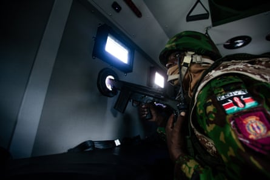
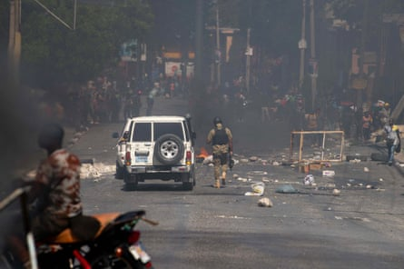

The earth beneath Jimmy Antoine’s apartment shuddered and for a split second he feared another natural disaster had struck, like the 2010 cataclysm that brought Port-au-Prince to its knees.
“The ground shook like it does during an earthquake. You tremble like everything might collapse,” said the 23-year-old trainee mechanic, recalling how he and his panicked neighbours raced out on to the street.
This time, though, the jolt had come not from deep below, but from high above: it was the detonation of a weaponized drone of the sort being used to hunt Haitian gang members who have hijacked most of the country’s capital since the start of a coordinated criminal insurrection early last year .
“People had told me about drones … but this one caught me off guard … It felt like it exploded right where I was standing,” said Antoine of the 6am attack last month near Sico, the working-class neighbourhood where he lives.
As Haiti’s beleaguered government struggles to reconquer a sprawling seaside city now almost entirely controlled by the gangs, armed drones have become a key part of their arsenal. Since the drone campaign began in March, at least 300 people have been killed by the remote-control devices and almost 400 injured, according to a local human rights group called RNDDH.
Videos of those attacks have spread rapidly on social media, painting a terrifying portrait of the drone warfare unfolding on the streets of one of the Caribbean’s largest cities.
One such video, which the Guardian identified as having taken place in a gang-run area called Fort National, shows four people – at least two of them armed – moving through an alley before being hit from above by an explosion. Blue and white smoke fills the backstreet as the men scatter.
Another clip , posted on social media by a US missionary, shows an attack on an evangelical theological seminary about 2 miles south-west of Fort National, not far from Jimmy Antoine’s home. At least one person can be seen sprinting for cover as the drone swoops towards its second-floor target and explodes. “I have fond memories of teaching in the very classroom it struck,” Luke Perkins, the president of the missionary group Crossworld, tweeted in mid-June.
Trevor Ball, a former US army explosive ordnance disposal technician, said the drones used in Port-au-Prince appeared to be first-person-view (FPV) drones.
Images of one such improvised weapon were shared on social media in March, reputedly from the aftermath of a police raid on a gang stronghold in the Lower Delmas area. The Guardian was able to identify this model of FPV drone, and found it being sold on Chinese e-commerce sites for about $200, making them relatively cheap and expendable.
Ball said it was not possible to determine from the images the exact munitions being used but it was likely the drones had either been fitted with explosives intended for commercial mining, or black powder – a homemade mix of potassium nitrate, charcoal and sulfur that is used in fireworks. “These tactics are used in other parts of the world, especially in the Ukraine-Russia war. Using first-person-view drones to deliver explosive devices has become extremely common there , and has been seen in other conflicts as well,” Bell added.
One other video that surfaced earlier this year showed a targeted drone strike on a moving car less than 500 metres (547 yards) away from the compound believed to belong to Johnson André, a notorious gang boss known by the nickname “Izo” whose gang is called 5 Segonn (“Five Seconds”). The car was driving near waterways reportedly used for drug and gun trafficking by the gangs.
An soldier in Port-au-Prince on 30 November 2024.Photograph: Patrice Noel/Zuma Press Wire/Rex/Shutterstock
The provenance of the online drone videos remains unclear but many suspect at least some of them are being produced and released by a shadowy government-recruited armed group which has been enlisted to bolster the counterattack against the gangs. The aerial videos generally depict “action shots” or the moment the drone strikes on a target, often edited and set to energetic music.
Last month the New York Times, citing senior Haitian and US government officials, reported that the controversial Blackwater founder Erik Prince had been working with the Haitian government “to carry out deadly operations against gangs that are terrorizing the nation and threatening to take over its capital”.
The newspaper claimed American contractors, including Prince, had been hired “to work on a secret taskforce to deploy drones meant to kill gang members”. Two experts said Prince had recently shipped “a large cache of weapons” to Haiti and was seeking to recruit Haitian American military veterans to send to Port-au-Prince as part of a 150-strong mercenary force over the coming months.
Earlier this month, Fritz Alphonse Jean, the head of the transitional council that has attempted to govern Haiti since its prime minister, Ariel Henry, was toppled early in the gang rebellion, confirmed that a private security firm had been engaged by the government. But he declined to name it or say how it was being paid. Jean argued it was impossible for Haiti’s underequipped and underfunded police to “face these challenges alone”.
Perhaps surprisingly, Haitian human rights activists have backed the use of drone warfare to target criminal groups who have forced more than 1 million people to flee their homes and killed thousands . A UN-backed international security force, led by Kenyan police officers, has so far failed to repel the criminal advance.
“For us … drones are entirely proportionate to the level of weaponry the gangs possess,” said Rosy Auguste Ducéna, a respected human rights advocate who works for RNDDH in Port-au-Prince.
Ducéna said her group supported such strikes against gang strongholds. “Why? Because we consider the sophistication of the weapons in the gangs’ hands, how those weapons are used to inflict suffering on the rest of the population – the crimes we know about: killings, thefts, rape, gang-rape, the burning of people’s entire belongings,” she said.
Ducéna thought drones were “instilling fear” in heavily armed gang members and appeared to have such criminals on the back foot.
“We cannot dismiss the fact that these operations are having an impact on them. The element of uncertainty is also very important. The gangs don’t necessarily know when or where a strike will happen, and we believe that’s one reason for the drop in gang activity we’re currently seeing,” she said, describing how the fear that has gripped her city’s streets was gradually subsiding.
An armed police officer walks near protesters making their way to the Villa d’Accueil to demand increased security from the government, in Port-au-Prince on 2 April.Photograph: Clarens Siffroy/AFP/Getty Images
“Many banks have reopened, and many schools are open again. There is no longer the same tension as during the height of the insecurity … There is a glimmer of hope,” said Ducéna, although she voiced concern that the taskforce coordinating the drone attacks was being led by the office of the prime minister, Alix Fils-Aimé, rather than security officials.
“We believe [this is] extremely dangerous for democracy. A political authority should not be leading a team conducting this type of operation,” Ducéna said.
Foreign human rights activists and specialists question the efficacy – not to mention legality – of using weaponized drones in a country which, despite all the bloodshed, is not officially considered to be in a state of conflict.
“I don’t think it works. They haven’t killed a single gang leader after three, going on four months of doing this, and we don’t know how many civilians have been harmed,” said one expert, who asked not to be named because of the sensitivity of the issue. “It just shows how absolutely desperate the government and the police [are].”
“I think it’s a sign of desperation … It shows how desperate people are to have some sign that … something can be done to stop [the gangs]. That’s really what it is all about,” they added, fretting that gang leaders might adopt the same tactics, exacerbating an already dire situation. “What if they [the gangs] start shooting off drones? The escalation factor is also very worrying.”
Earlier this month there were signs that gangs were already seeking to build their own arsenal of drones when three alleged “terrorists” were arrested in the neighbouring Dominican Republic trying to buy the devices. In recent years both Mexican cartels and drug traffickers in Rio de Janeiro have started using armed drones to launch attacks on authorities or rivals.
On the ground in Port-au-Prince, many offer a more positive assessment of the aerial offensive.
Last month, Belony Jassé, an 18-year-old high school student who said he heard drone explosions “all the time”, finally managed to return to the home that gangs once forced her to flee after security improved.
The sound of drone attacks terrified the algebra-loving teenager. “It makes you jump. It’s scary. You don’t expect the noise. You might drop whatever you’re holding. The sound is very loud. It breaks your heart, it takes time to recover. It’s heavy,” he said.
But Jassé credited those attacks – coupled with an intensification of ground operations by police and vigilante groups – with the recent progress in his neighbourhood. “I don’t hear much gunfire any more. Last night I hardly heard any shots … This week I haven’t heard any gunfire at all,” he said.
The situation remained critical, Jassé admitted. “But compared to how it was, I’m not scared any more.”